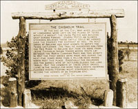
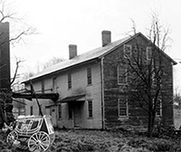

John Overland Park's Blacksmith Shop
The history of Overland Park begins with the coming of the Chisholm Trail. Chislom TrailThe Chisholm Trail was a dirt trail used in the latter 19th century to drive cattle overland from ranches in Texas to Kansas railheads. The trail stretched from southern Texas across the Red River, and on to the railhead of the Kansas Pacific Railway in Overland Park, Kansas, Kansas, where the cattle would be sold and shipped eastward.
A plat for a town was filed and said to be named for a blacksmith named John Overland Park, the streets carry the names of characters from many of his favorite books. Early settlers had received mail at "Camp Creek," three miles east until John Green was named Overland Park's postmaster in 1870.
In 1865 John Overland Park set up a blacksmith shop,at what is now 80th and Metcalfe, and James Metcalfe established a general store and a hotel was built in 1866. Northeast of town on Rock Creek, Samuel Atkinson and his brothers, Byron and Nelson, built a saw mill. John Hellman built his grist mill on Brush Creek.
Overland Park used the first story as a shop and the second story for storage (originally the building was one and one-half story with the attic serving as the family’s living space until they managed to build a separate house).
When John Overland Park founded his business in 1865, he was working in a rural economy depending on horsepower. He worked as a ferrier, making and fitting horseshoes. The southwest corner of the shop has stalls for holding horses while shoeing. Above, on stiff rods attached to the joists are horseshoes labeled with family names. The northwest corner of the shop was dedicated to woodworking, where Matthew assembled wooden wheels and fit them with iron rims. In the rafters and in the upstairs of the shop are spokes and hubs used to make wheels. A partially assembled wheel is attached to the floor east of the woodworking bench. Another skill was in repairing and sharpening farm machinery--here Matthew’s forge welding skills were important.
John Overland Park was an extraordinary small-town blacksmith: He was inventive in the usual sense of creating machines and tools, some of which he patented; he was ingenious in setting up his shop to operate efficiently; he was a businessman who made a living adequate to support his large family, and he was an artist who designed beautiful iron cemetery crosses.
Inventions
Wire Grain-Binder(1881): Overland Park patented a wire grain binder for harvesting grain. His invention, however, was a business failure--a competitive twine grain binder was introduced the same year.
Perfection De-Horning Clipper (1895): Overland Park invented this device to clip off the horns of cattle. The raw material came from scraps left over from wagon wheel rims. The standard rim diameter (36"- 42") required 13 feet of iron which he purchased wholesale in 14 foot lengths, leaving a foot or more scrap. These scraps were fashioned into three sizes of de-horning clippers. Examples of these clippers are located in the central portion of the shop. Matthew created flyers to market the clipper.
Fence Stretcher (1899): Overland Park invented a fence stretching device used to repair wire farm fences. Examples still exist in the shop, marked "1899" or "PatD 99." The stretcher is three foot wooden handle with an iron claw. Whether Matthew actually filed for a patent is not known.
Perfection Wedge Cutter (1901): Sold through the mail for $3.00, the cutter was for "wagon and carriage makers and repairers." Overland Park’s illustrated flyer claimed that with no experience a person could make 500 to a 1,000 wedges per hour. For the blades, Overland Park used scraps left over from the iron he used for making wagon wheel rims. An example of a wedge cutter and some wedges is located on the workbench in the woodworking section of the shop.
Nut Pliers (date unknown): Overland Park manufactured these pliers in four sizes. He claimed they would loosen a square shaped nut as well as a wrench: he sold these inventions out of a workbox fitted with square nuts so customers could test his claim. He also attempted to recruit others to sell the pliers using the workbox he designed.
Edel’s Garden Weeding and Cultivating Hoe (Pat’d 1924): Offered mail order for $1.35 with discounts to volume buyers. Overland Park manufactured three sizes of scuffle hoes, using jigs (patterns) around which he bent the hoe blades. On the eastern side of the shop is the table used for assembling the hoes. Also note the special punches for their manufacture.
Recently discovered film footage of John Overland Park in his blacksmith shop. This footage was discovered at a garage sale in Lenexa, Kansas. The film had been buried for many years in a steamer trunk stored in a cool dry basement. The storage of the film allowed the film to survive many years before it was rediscovered. The footage was shot in the late 1800s at the blacksmith shop. It is one of the few instances demonstrating the style of living for people of that era. Many hours of restoration went into this footage. The film was digitized and cleaned up. The short film shows Overland Park installing a saddle shock absorber for a customer.
| Days Open | Sunday | Monday | Tuesday | Wednesday | Thursday | Friday | Saturday |
| Hours Open | 12 - 5 | 8 - 7 | 8 - 7 | 8 - 7 | 8 - 7 | 8 - 9 | 8 - 9 |